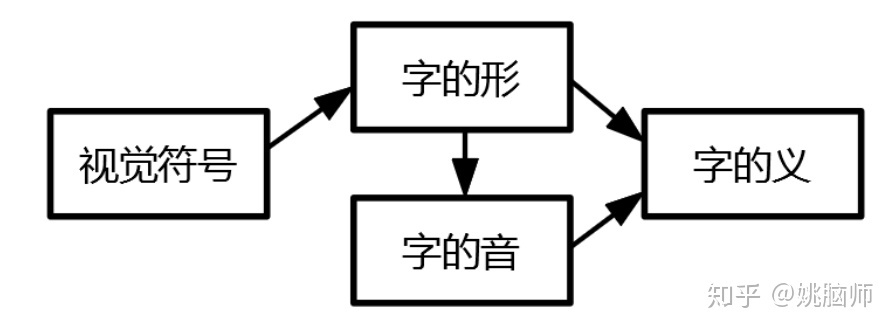
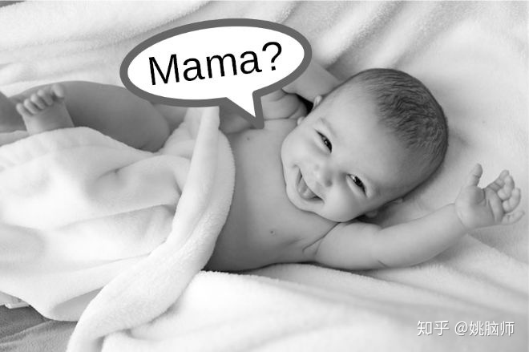
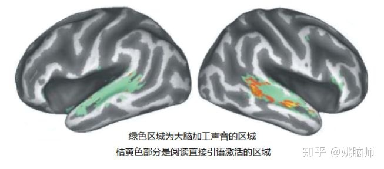
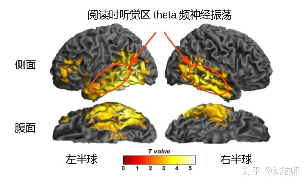

在信息爆炸的时代，谁都想拥有一目十行的本领。
阅读是一个将视觉符号转化成意思的认知过程，可以简单地用下图表示。

很多速读理论推崇用抑制默读的方法提高阅读速度。
默读（covert articulation/subvocalisation）是指阅读时将文字在脑海中默念出来，也就是把字形转化成字音的过程。从字形转化到字音，然后再提取字义，所需时间要比直接由字形提取字义更长，因此会减慢阅读速度。
这篇科普旨在告诉大家，抑制默读虽然能提高眼睛扫视的速度，但是是以牺牲语义的理解，破坏语言的韵律为代价的。
一、阅读和语音加工密不可分
1. 文字是代表语音的符号
在进化过程中，人类的语言（用嘴说的）在5万到15万年前就已经发展形成。文字符号到了距今5千年左右才被发明出来用于代表语音和语义。
作为代表语音的符号，文字和语音有紧密的对应关系。在字母语言（alphabetic languages）如英语里，每个字母都代表相应的元音和辅音。比如A念哎或啊，T念特。即使在语标语言（logographic languages）如中文里，也有许多形音字由形旁（代表意思）和声旁（代表语音）组合而成。如帆由形旁 “巾” 和声旁 “凡” 组合而成。即使一个人不知道帆怎么念，也能通过声旁猜个八九不离十。
我们在学习语言时，也是先从孩童时的牙牙学语（学语言的音），到上学后将语音和文字符号联系起来。这种先学语音，后对应文字符号的过程决定了大脑加工文字的第一反应就是激活它所代表的声音。

2. 实验证明阅读伴随着语音加工
我们在读书或者看微信的时候，有时会意识到自己在默念文字，或是脑补对方的声音。
比如阅读 “吃葡萄不吐葡萄皮，不吃葡萄倒吐葡萄皮” 这句话的时候，大家马上意识到这是个绕口令。如果阅读时不存在语音的加工，我们阅读这句话就不会感到绕舌头。
在实验上，科学家用各种方法来客观地测量阅读是否伴随着语音加工。
我们知道在念英文单词时，重读的音节发音的时间要比轻读的音节发音长。因此一个单词重读的音节越多，念起来时间越长。
2005年Ashby和Clifton用了眼动追踪（eyetracking）的技术来研究英文重音和阅读时间的关系。他们发现，在字频，字长，音节数等因素相当的情况下，阅读两个重读音节的单词如 fundamental 所需的时间要比阅读单重读音节的单词如 significant 需要的时间更长 (Ashby & Clifton, 2005) 。
如果阅读只有视觉加工，那重读音节的数量就不会影响阅读时间。这里的数据显示重读音节多的单词需要的阅读时间更长，这说明阅读时是伴随着语音加工的。
2011年的时候姚脑师结合了眼动追踪和核磁共振成像（fMRI）的技术来探讨阅读时语音加工的神经基础 (Yao, Belin, & Scheepers, 2011) 。我们发现在阅读文字，尤其是直接引语（如大师兄对小师妹说：”咱今晚一起吃饭吧？”）的时候，大脑的听觉皮层与静息状态下相比显得更加活跃。听觉皮层本是专门加工声音信息的。如果阅读只是个视觉加工的过程，那它就只会激活大脑的视觉皮层以及高级的语言加工区域。既然大脑的听觉皮层会在阅读中被文字符号激活，这说明阅读确实伴随着语音加工。

二、抑制默读影响语义的理解
思维缜密的同学可能要问了：阅读伴随着语音加工只能说明相关性，并不能说明阅读必须依赖语音加工呀？
在实验心理学里，我们可以通过抑制默读（articulation suppression）来研究默读对阅读理解的影响。抑制默读指在阅读的时候同时发声说话，比如连续地说 “赵钱孙李周吴郑王” ，来充分占用大脑的发音系统。发音系统繁忙，大脑就没有足够资源对文字进行默念，但是却不影响文字的视觉加工。
在 Alan Baddeley 提出工作记忆（认知过程中暂时存放信息的记忆，类似电脑的内存）的理论时，他就意识到有效的阅读需要工作记忆来暂时储存语音信息。在1981年的一篇文章里，他和同事们用数个实验说明了抑制默读降低了文字加工的深度，使阅读者不能有效地检测到错误的字或句法 (Baddeley, Eldridge, & Lewis, 1981) 。
类似地，抑制默读会降低对语义的理解。Daneman 和 Newson 让阅读者阅读长篇散文并同时大声数数。虽然数数比较简单，不能完全抑制默读，但是阅读者对散文内容的记忆和理解还是降低了10-12% (Daneman & Newson, 1992) 。
三、抑制默读破坏了语言的韵律
有的同学不以为然：如果抑制默读只降低10%的阅读理解，那我只要把阅读速度提高11%或以上，不就可以在单位时间里获取更多的信息量吗？
在数学上这个推理没毛病。
但是阅读和检索信息不一样，并不是越快就越好。
人类的语言像音乐一样，有韵律的美。语音的抑扬顿挫、长短停顿都饱含着作者感情的起伏，叙述着情节的急缓。徐志摩的《再别康桥》若是以2x速度朗诵，你便无法感受作者对康桥依依惜别的深情，体味那一幅幅美妙的意境。志摩怕不再是 “轻轻的我走了”，而是 “着急地俺走了” 吧！
阅读里语音的加工正是把贫乏的符号编奏成美妙韵律的过程，和大脑神经元放电的频率息息相关。
大脑各个皮层的神经元在静息状态都会以特定的频率放电。这种神经细胞兴奋度规律起伏的现象叫神经振荡（neural oscillations）。大脑的听觉细胞大多喜欢以theta（4-7Hz）的频率振荡。这是因为人类多是以4-7个音节/秒的速度说话，如果听觉细胞的兴奋起伏和音节的频率同步，这些细胞就能更有效地加工编码语音。
姚脑师实验室最新的研究发现，大脑的听觉细胞在阅读时也会加强theta频率的神经振荡，和阅读的语音加工同步。也就是说，大脑在阅读时也以4-7Hz的频率 “期待” 听到文字的声音。这也是为什么在字母语言里，阅读时眼动的速度和该语言说话时音节的频率相当 (Golch, Hawelka, Sassenhagen, & Poeppel, 2018)。如果阅读速度过快或者过慢，那听觉细胞就没有办法编奏文字的韵律，我们也就失去了韵律传递的丰富信息。

四、没有语音的符号？
人类语言的进化使大脑不可避免地将文字和语音联系在一起。阅读也因语音的存在有最优的速度和节奏，来最大化语言传递的信息。
但是信息量的不断增大是残酷的现实。为了提高加工信息的速度，人类会不会有一天将语音从文字中完全除去，像计算机一样以纯粹的、无声的方式高速交流呢？
当然有可能。不论是精巧的文字，还是优美的韵律，归根结底也是由大脑神经元放电，也就是能量分布的规律来编码解码的。只要我们搞明白了这些规律，完全可以把人的语言系统这个 “中间人” 除去，以最直接的方式在大脑之间、或是人机之间传递信息。
至于我们愿不愿意抛弃我们熟知的作为“人”的体验，走向未知的、充满可能的未来，只有时间可以告诉我们。
##参考文献
- Ashby, J., & Clifton, C. (2005). The prosodic property of lexical stress affects eye movements during silent reading. Cognition, 96(3), B89-100. doi:10.1016/j.cognition.2004.12.006
- Baddeley, A., Eldridge, M., & Lewis, V. (1981). The role of subvocalisation in reading. The Quarterly Journal of Experimental Psychology Section A, 33(4), 439–454. doi:10.1080/14640748108400802
- Daneman, M., & Newson, M. (1992). Assessing the importance of subvocalization during normal silent reading. Reading and Writing, 4(1), 55–77. doi:10.1007/BF01027072
- Golch, J., Hawelka, S., Sassenhagen, J., & Poeppel, D. (2018). Reading at the speed of speech: the rate of eye movements aligns with auditory language processing. BioRxiv.
- Yao, B., Belin, P., & Scheepers, C. (2011). Silent reading of direct versus indirect speech activates voice-selective areas in the auditory cortex. Journal of Cognitive Neuroscience, 23(10), 3146–3152. doi:10.1162/jocn_a_00022